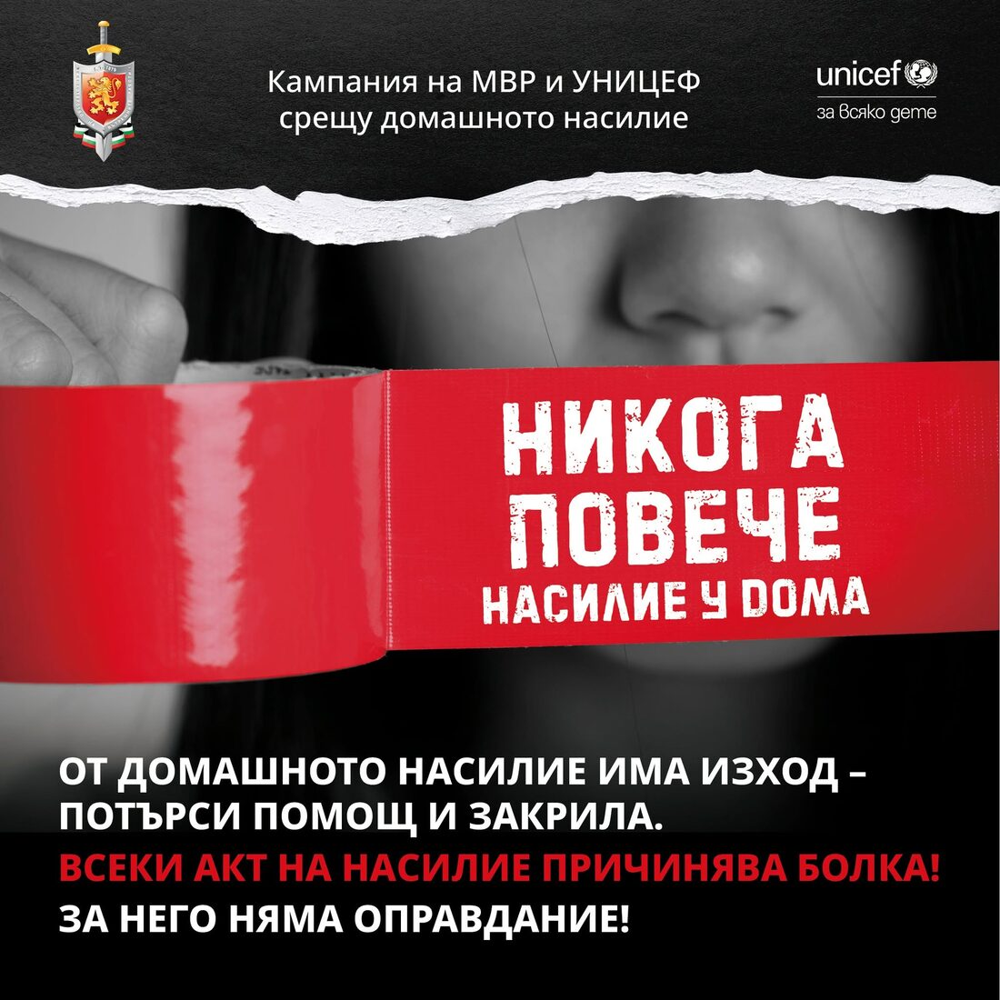

Физическо
Physical
Удряне, ритане, блъскане, причиняване на физическа болка или нараняване.
Hitting, kicking, pushing, causing physical pain or injury.
Какво е тормозът, как изглежда онлайн, по какви признаци се разпознава и как да реагираме, за деца, родители и учители.
What bullying is, what it looks like online, the signs that reveal it and how to respond — for children, parents and teachers.

Булингът (тормозът) е повтарящо се поведение, насочено срещу конкретно дете, при което има неравновесие на силите, заради възраст, физическа сила, положение в групата, брой или достъп до информация. Еднократният конфликт между равни не е тормоз; тормозът е модел, който се повтаря и от който детето не може да излезе само.
Bullying is repeated behaviour directed at a particular child, in which there is an imbalance of power — because of age, physical strength, standing in the group, numbers or access to information. A one-off conflict between equals is not bullying; bullying is a pattern that repeats and that the child cannot escape alone.
Онлайн тормозът има три особености, които го правят по-тежък: той не спира на изхода на училището, публиката му е неограничена, а следата от него остава и може да бъде разпространена отново по всяко време.
Online bullying has three features that make it harder to bear: it does not stop at the school gate, its audience is unlimited, and the trace it leaves remains and can be shared again at any moment.
Агресията рядко е самоцел. Тя е сигнал, за проблем, страх, умора, силна емоция или загуба на контрол. Това важи и за детето, което упражнява тормоз: зад поведението му обикновено стои нещо, което остава невидимо за околните. Разбирането на този сигнал не е оправдание за насилието, а начин то да бъде спряно трайно, а не само наказано.
Aggression is rarely an end in itself. It is a signal — of a problem, of fear, of exhaustion, of a strong emotion or of a loss of control. This holds for the child doing the bullying too: behind the behaviour there is usually something that stays invisible to those around. Understanding that signal does not excuse the violence — it is the way to stop it for good rather than merely punish it.
Насилието над дете включва физическо или психическо насилие, сексуално посегателство, пренебрегване, злоупотреба и експлоатация. То може да бъде извършено от възрастен или от друго дете и да се случи у дома, в училище, на улицата или в интернет.
Violence against a child includes physical or psychological violence, sexual assault, neglect, abuse and exploitation. It can be inflicted by an adult or by another child, and it can happen at home, at school, in the street or online.
Удряне, ритане, блъскане, причиняване на физическа болка или нараняване.
Hitting, kicking, pushing, causing physical pain or injury.
Обиди, унижение, заплахи, постоянен страх, контрол или изолация.
Insults, humiliation, threats, constant fear, control or isolation.
Всяко сексуално посегателство или въвличане на дете в сексуално поведение.
Any sexual assault on a child or drawing a child into sexual behaviour.
Липса на необходимите грижи, внимание, защита и подкрепа.
The absence of the necessary care, attention, protection and support.
Заплахи, унижаване, разпространяване на снимки или лична информация, изнудване и тормоз чрез интернет и социалните мрежи.
Threats, humiliation, the spreading of photographs or personal information, extortion and harassment through the internet and social networks.
Насилието не бива да се приема като „нормален начин на възпитание“ или като нещо, което детето трябва да понесе и да запази в тайна. То може да има сериозни последици за физическото и психическото здраве, за развитието и за способността на детето да учи и да изгражда отношения.
Violence must not be accepted as a “normal way of bringing up a child” or as something a child has to bear and keep secret. It can have serious consequences for physical and mental health, for development, and for a child’s ability to learn and to build relationships.
Децата рядко казват директно. Обикновено първи се променят навиците, сънят и настроението.
Children rarely say it outright. Usually habits, sleep and mood are the first things to change.
Един признак сам по себе си не означава тормоз. Тревожен е моделът: няколко признака заедно, които се задържат във времето или се появяват рязко.A single sign on its own does not mean bullying. What matters is the pattern: several signs together that persist over time or appear abruptly.
Предотвратяването на насилието започва с навременната реакция.
Preventing violence begins with reacting in time.
Всеки възрастен и всяко дете може да помогне, когато разпознае проблема и не остане безучастен. Превенцията на насилието над, между и от деца изисква постоянни и съвместни усилия.
Every adult and every child can help, by recognising the problem and not standing by. Preventing violence against, between and by children takes constant and shared effort.
Всяко дете има право да бъде защитено.
Every child has the right to be protected.